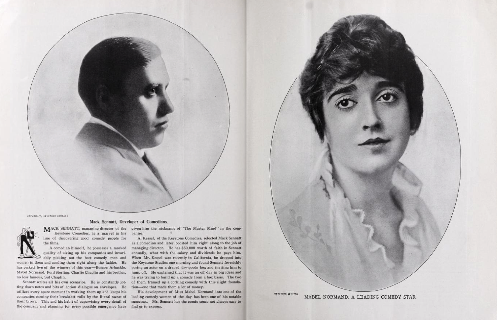

Mabel's Film Career
A Digital Humanities Project
in Seven Thrilling Acts!
by Russell Zych, MLIS '22
Act VI: Legacy and Scholarship
Introduction to Mabel Normand's Career and Legacy
In the past few decades several scholars have developed important revaluations of early film production in the United States, with a particular focus on highlighting the accomplishments of many women who wrote, directed, and produced these early films. Leading exampled include the Women Film Pioneers Project and the Women They Talk About Project. This project aims to contribute in the same spirit.

Mack Sennett points out Mabel Normand on screen in a scene from Mabel’s Dramatic Career (1913), a self-aware comedy in which Normand plays a kitchen maid who travels to Keystone Studios to become a star. Photo courtesy of the Orange County Archives, via Wikimedia Commons
One figure of unique standing in early cinema is comedienne, actress, director, and producer Mabel Normand. After a rapid rise to prominence in the mid-1910s, health issues and involvement with several high profile scandals undercut her career at its peak. Normand starred in 200 films (shots and features) in the 17 years between 1910 and 1927.
Several film scholars and historians lament that her accomplishments are not better known and recognized more widely, which may be attributable to accounts from her better known creative partners and collaborators (namely Mack Sennett and Charlie Chaplin) that diminish her contributions and influence for the sake of emphasizing their own. Placing her career in comparison to theirs would not be productive, so instead this project simply aims to examine the distinctiveness and notable qualities of Normand’s work.

Two pages from a 1915 issue of Film Fun magazine. Under a portrait of Normand (right) reads "Mabel Normand, a Leading Comedy Star." Under a portrait of Mack Sennett (left) reads "Mack Sennatt [sic], Developer of Comedians." The article shares that Sennett's "Development of Miss Mabel Normand into one of the leading comedy women of today has been one of his notable successes." Photo from Media History Digital Library's Lantern Database, via the Internet Archive.
While there has been invaluable work done to assess the extent to which her achievements and contributions to silent comedy, much of her history and legacy remain grounded in speculation. This is in part due to a combination of the reasons mentioned above, but also due to widespread infatuation with Normand’s that extends into scholarship about her work. As Simon Joyce and Jennifer Putzi in explain their Women Film Pioneers entry
on Normand:
{kind=link}
“Even after her death, scholars have been more interested in the gossip surrounding Normand’s life and romances (including an announced marriage to Sennett in 1915 that never materialized) than her work...Scholars would do well to refocus attention on Normand’s distinctive contribution to early cinema and slapstick comedy, as well as the nature of her directorial work for Keystone.” If scholarship thus far has indulged too much in speculation and scandal, then grounding the story of Normand’s career in filmography data alone might offer an instructive realignment.
If scholarship thus far has indulged too much in speculation and scandal, then grounding the story of Normand’s career in filmography data alone might offer an instructive realignment.
This project site employs a combination of visual storytelling tools, data visualization tools, and film clips to display a few dimensions on which we can assess Mabel Normand’s career. These observations and the data visualization that enable them are by no means meant to be taken as conclusive but instead should be viewed as pointers towards several avenues for further scholarship and inquiry.
 Normand beams at the viewer while Sennett and Chaplin fued as rival suitors in The Fatal Mallet (1914), one of the first films Charlie Chaplin appeared in with Normand at Keystone Studios. Via Wikimedia Commons.
Normand beams at the viewer while Sennett and Chaplin fued as rival suitors in The Fatal Mallet (1914), one of the first films Charlie Chaplin appeared in with Normand at Keystone Studios. Via Wikimedia Commons.
{kind=link}
Navigating the Site (Some Guiding Questions)
While these pages have been sorted into a “seven act” format, users should not feel obligated to navigate them in order. There is no larger organizing principle beyond these diverging questions:
-
1)How was Normand’s career emblematic of trends in silent comedy production?
-
2) How was Normand’s career exceptional relative to major trends in silent comedy production?
In developing some analysis grounded in this data, a third, reflexive, question emerges:
3)What is gained and what is lost (or must be compensated for) when using filmography data alone to account for the importance, meaning, and influence of a single person’s filmography?
It might come as no surprise that quantitative visualizations alone cannot adequately account for what makes Normand and her work significant. To this point, I have included some historical context, some brief commentary, and a curated selection of distinctive performances.
In short, this project juggles three guiding questions, how was Mabel Normand and her career emblematic, exceptional, or beyond our methods. You can read more about these methods in the prologue .